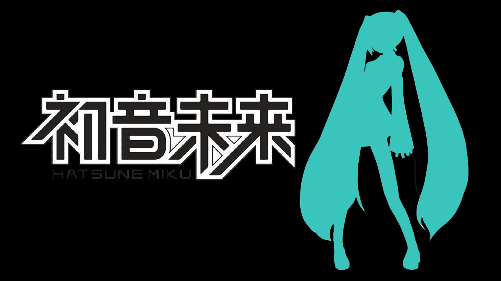

<!DOCTYPE html>
<html>
	<head>
		<meta charset="utf-8">
		<title></title>
		
		<script src="./js/anime.min.js"></script>
		
		
		
		<script type="text/javascript">
			
			var bouncingBall = anime({
				targets: '.ball',
				translateY: '50vh',
				duration: 300,
				loop: true,
				direction: 'alternate',
				easing: 'easeInCubic',
				scaleX: {
					value: 1.05,
					duration: 150,
					delay: 268
				}
			});
		</script>
		<style type="text/css">
			* {
				box-sizing: border-box;
			}
			body {
				margin: 0;
				padding: 0;
				overflow: hidden;
				background-color: black;
			}
			.wrapper {
				height: 80vh;
				width: 100%;
				margin: 0;
				padding: 0;
				position: relative;
				overflow: hidden;
				border: 1px solid blue;
				background-color: lightblue;
				color: #444;
			}
			
			.ball {
				height: 200px;
				width: 200px;
				position: absolute;
				top: 20px;
				bottom: 0;
				left: calc(50% - 100px);
				background-color: darkblue;
				border-radius: 50%;
			}
		</style>
	</head>
	<body>
		<section class="wrapper">
			<div class="ball"></div>
		</section>
	</body>
</html>
<div class="dj-3-1" style="border-style:  none solid solid; width: 30%; height: 100%; border-width: thin;">
				
				
			</div>
			<div class="dj-3-2" style="width: 70%;height: 100%; border-style:  none solid solid; border-width: thin;">
				<p style="margin: 30px; font-family: ;">初音未来（はつね みく，Hatsune Miku），是2007年8月31日由Crypton Future Media以雅马哈的 Vocaloid 系列语音合成程序为基础开发的音源库，音源数据资料采样于日本声优藤田咲。
2010年4月30日，发布初音未来6种不同声调的版本“初音未来Append”。2013年8月31日，初音未来英文版本同VOCALOID3一并发行。此外，初音未来还担任日本音乐团体Sound Horizon的演唱与合唱。</p>
			</div>